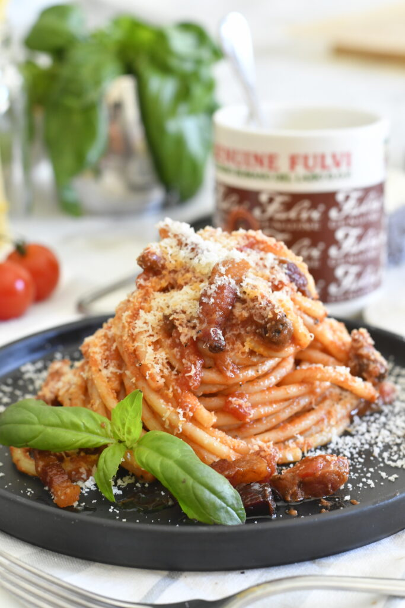

Bucatini All’Amatriciana/h1>
Home

Ingredients
- 5 ounces bucatini pasta
- ¼ cup extra-virgin olive oil
- 3 crushed garlic cloves
- 1 ½ ounces guanciale (cured pork cheek), sliced
- ¼ cup sliced red onion
- 1 pinch red pepper flakes
- 4 ounces crushed San Marzano tomatoes
- salt and ground black pepper to taste
- 1 ounce freshly grated Pecorino Romano cheese
Steps
- Fill a large pot with lightly salted water and bring to a rolling boil. Stir in bucatini and return to a boil. Cook, uncovered, stirring occasionally, until bucatini is tender, about 11 minutes. Drain.
- Heat oil in a large skillet over medium-high heat. Add garlic cloves; cook until golden brown, about 1 minute. Remove with a slotted spoon and discard. Add guanciale; cook and stir until crisp and golden, about 4 minutes. Add onion and red pepper flakes; cook and stir until onion is translucent, about 3 minutes. Stir in tomatoes, salt, and black pepper. Simmer tomato sauce until flavors combine, about 10 minutes.
- Stir bucatini and Pecorino Romano cheese into tomato sauce and toss until evenly coated.